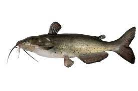
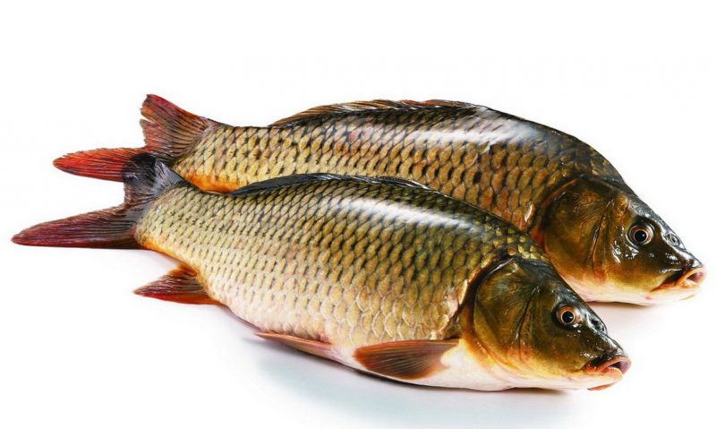
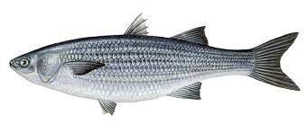
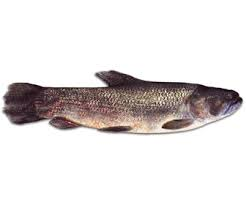
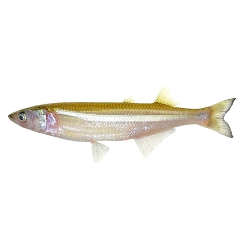

Bagre
- Distribución geográfica
- Datos biológicos
- Pesca
- Carnadas
Cuenca del Plata (ríos Pilcomayo, Paraná, Uruguay, Río de la Plata), cuencas de los ríos Quequén Grande, Sauce Grande y Salado en la provincia de Buenos Aires, numerosas lagunas y arroyos, desde el Salado hasta las sierras del sistema de la Ventana, en Córdoba, Río III y Río IV.
Especie muy común en riachos y lagunas de fondos lodosos o firmes. Se alimenta de peces y crustáceos. Alcanza alrededor de 55 cm de longitud total.
Con redes agalleras o con espinel y línea flotante encarnada con lombriz, mojarra, hígado o carne blanca. Especie con gran potencial de cultivo, excelencia en carne y tecnología totalmente desarrollada, incluyendo su reproducción en forma inducida y controlada. Se lo está cultivando intensivamente en el sur de Brasil con inserción amplia en el mercado interno de ese país.
Las lombrices son tal vez la carnada más clásica para pescar. Verás que se usan en casi todo escenario de pesca. Entre las lombrices usadas para atrapar bagres se incluyen las de jardín. Cuando pesques bagres con lombrices, asegúrate de usar suficientes de una vez para que el anzuelo roce el fondo del lago. Allí es donde se encuentran los peces esperando la comida.
carpa
- Distribución geográfica
- Datos biológicos
- Pesca
- Carnada
De origen asiático, fue introducida al país en la década del 40 aproximadamente, para estanques de parques; siendo posteriormente trasladada a lagunas y estanques; desde donde se dispersó hacia diversos ambientes acuáticos. Actualmente, su abundancia es creciente en el Río de la Plata y en el río Paraná, aunque más escasa en el Uruguay. Llegó a superar la biomasa del sábalo en el Río de la Plata hasta su posterior equilibrio como especie invasora y ubiquitaria. Su límite sur conocido, es la provincia del Neuquen, encontrándosela en ambientes acuáticos de prácticamente todas las provincias restantes
Sus juveniles prefieren en general, lugares con corriente, mientras que los adultos prefieren las aguas sin movimiento. Su talla puede alcanzar hasta los 100 cm y hasta 20 kg de peso, como en el río de la Plata y la Cuenca del Salado. Básicamente , su alimento está constituido por Insectos, Crustáceos, Moluscos y Vermes, así como otro tipo de alimento acuático que extrae del fondo de los ambientes donde habita. Se reproduce en ambientes naturales y en estanques , activándose con el aumento de la temperatura hacia la primavera y verano. Al ser una especie de alta fecundidad y tolerante a factores ambientales desfavorables, ha proliferado (a partir de la gran inundación de la década del ´80) en cuanto ambiente degradado exista, afectado por la acción del hombre (ríos y lagunas, especialmente).
Se captura en los ríos de la baja Cuenca del Plata , donde se pesca ocasionalmente, junto al sábalo; pero también son objeto, actualmente, de pesca diferenciada. Hoy en día, es ampliamente utilizada en autoconsumo por las poblaciones ribereñas que la capturan para ello, e inclusive la etnia de origen asiático la pesca específicamente en la Cuenca del Salado. Su pesca deportiva suele practicarse con mayor énfasis en algunas provincias.
RECETA BASICA DE MASA La siguiente es una receta de masa básica que puede servir como carnada para varias especies, tanto la boga (de la que hablamos más arriba) como las carpas de los diques cordobeses toman muy bien esta masa. Además constituye una buena alternativa para cuando andamos escasos de carnada natural ya que se conserva durante mucho tiempo y es de fácil preparación. Se mezclan, por partes iguales, harina de trigo y harina de maíz, se les agrega azúcar o miel, clara de huevo para aglutinar los ingredientes y se lo puede saborizar con ajo en polvo, vainilla, mostaza, orégano, condimento para pizza o queso rallado (cada uno deberá probar cuál es la receta más efectiva), se agrega agua hasta formar una masa consistente, luego se amasa y se forman unos cilindros de unos 2 cm de diámetro y 10 de largo. Se hierven en agua por 15 minutos, se escurren y se dejan orear. Se deben guardar en la heladera envueltos en un trapo húmedo. Al momento de encarnar se cortan pequeños "ñoquis" y se cubre totalmente el anzuelo formando una perita.
Lisa
- Distribución geográfica
- Datos biológicos
- Pesca
- Carnada
Costa Atlántica, Río de la Plata y Uruguay. Cuenca del Salado (común en muchas lagunas bonaerenses).
Especie muy común en riachos y lagunas de fondos lodosos o firmes. Se alimenta de peces y crustáceos. Alcanza alrededor de 55 cm de longitud total.
con redes agalleras para consumo en fresco a mercado interno. Existe además una actividad artesanal de ahumado de relativa importancia, en la zona de Bahía de Samborombón y San Clemente, en la provincia de Buenos Aires. Muy apreciada por la colectividad judía. Se trata de una especie con potencial para cultivo en estanques, que nunca ha sido ensayada en el país. Su reproducción inducida comercial no se ha logrado, pero muchos países desarrollan su cultivo capturando los juveniles o los desoves en el medio silvestre y trasladándolos a estanques de aguas salobres o dulces donde se adapta bien.
Carnadas y conservación: Es vital que los dos cebos principales para esta pesca -la lombriz de tierra y la pancita de lisa- sean protegidos del sol. Lombrices abombadas o moribundas no pescan. Llevar una heladerita con bloques de hielo o ladrillos de agua congelados en embaces de tetra brick con tapa a rosca (que de paso serán nuestras fuentes de líquido durante la pesca).
Tararira
- Datos biológicos
- Pesca
- Carnada
Frecuenta aguas poco profundas y vegetadas, donde se refugia y construye su nido, generalmente, en las orillas. En ellos permanece durante los meses fríos, en forma aletargada. Es un pez ictiófago, muy agresivo y en las lagunas dependientes de la cuenca del río Salado su presa favorita es el pejerrey, con quien comparte este tipo de ecosistema. Se reproduce entre los meses de septiembre y octubre. Los ejemplares mayores pueden superar los 80 cm de longitud.
Por su tamaño, calidad de carne y abundancia, es objeto de explotación comercial. En las lagunas de la provincia de Buenos Aires, se la pesca en primavera, verano y otoño con espineles y redes agalleras. En el Paraná medio e inferior se utiliza red de arrastre y el palangre o espinel tendido cerca de la costa y encarnado con peces vivos. Se ha exportado a Brasil. Se pesca en forma deportiva con señuelos, y con mosca. Esta última arte es muy utilizado por los deportivos denominados mosqueros”, ya que se trata de una especie muy combativa, similar al “balck bass” de Estados Unidos.
La carnada que más atrae a las tarariras es el corte de vaca, su corazón, las patas de rana, la mojarra y la lombriz.
Pejerrey
- Datos biológicos
- Pesca
- Carnada
Sus poblaciones desovan naturalmente, con dos frezas: una que abarca los meses de septiembre a diciembre (determinada por la temperatura ambiente) y otra menor durante el otoño (mes de marzo). Esta especie es característica de clima templado. Sus juveniles son zooplanctófagos (crustáceos, larvas de insectos) y sus adultos son piscívoros y hasta caníbales. Pueden llegar a medir hasta 74 cm de longitud total.
Con fines comerciales con redes agalleras y espineles. En la provincia de Buenos Aires la pesca comercial está prohibida en numerosas lagunas, pero se ejecuta el furtivismo. Es el pez más apreciado por los pescadores deportivos (en general considerados “extractivos”), quienes lo capturan con línea de media agua y pequeños peces como carnada; especialmente, mojarra. Para cultivo extensivo en cuerpos de agua como los señalados, se efectúa el stripping, obteniéndose ovas y esperma y procediéndose a su fertilización en seco. No se ha obtenido la tecnología que permita cultivarlo en estanques o tanques, en semiintensivo o intensivo, en forma rentable. Es una especie denso-dependiente y de escaso crecimiento. Así como Japón sacó adelante su tecnología de cultivo, Israel (que es punta en acuicultura de organismos cercanos a la base de la cadena alimentaría, como el pejerrey) lo abandonó por su escaso crecimiento. Actualmente (2002-2003) se están realizando estudios con el objeto de obtención de desoves y formación de poblaciones de las mejores líneas de crecimiento, para proceder a su cultivo posterior, con aporte de expertos del Japón (Convenio Argentina/Japón). Esta especie ha sido prácticamente insertada en todos los cuerpos de agua aptos de la República. Una segunda especie, O.perugiae (juncalero), habita los ríos Paraná y Uruguay, alcanzando una talla reducida, con un máximo de 25 cm de longitud total. Asimismo, una tercera especie de aguas dulces, exclusiva de las aguas patagónicas, O. microlepidotus (pejerrey patagónico) ha sido sembrada extensivamente en muchos ambientes patagónicos, fuera de su distribución original.
Con respecto a la carnada la mojarra es la que mejor rinde. En algunos casos hay que agregarle tiritas de filet de dientudo o mojarra combinándolas. En nuestro Rio de la Plata, mas precisamente en la Costanera Norte frente al Aeroparque o la zona del Abanico, dan resultado los gusanitos combinándolos también con lombrices y/o filet de dientudo bien pequeño utilizando anzuelos n° 4 o 5.